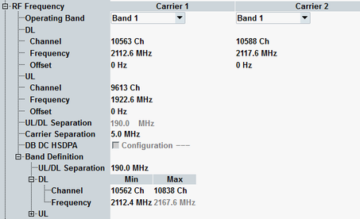

This section configures the operating band and channel/frequency for uplink and downlink.

"Uplink Channel" specifies the center frequency of the RF analyzer and "Downlink Channel" the center frequency of the generated WCDMA signal.
To specify the center frequencies, select an operating band first, then enter a valid channel number or frequency for uplink or downlink. The related frequency or channel number, UL/DL separation and the parameters for the other direction are calculated automatically. You can set UL/DL separation for user-defined band, see "Band Definition". For the 3C-HSDPA scenario the frequencies must fulfill the following condition:
Fcarrier 1 < Fcarrier 2 < Fcarrier 3
Positive or negative frequency offset to be added to the specified frequencies is individually selectable for each carrier in uplink and downlink. In the scenario with RX diversity, both DL and UL frequency offsets are interconnected. For several carriers sharing one RF TX/RX module, the frequency offset is specified for all carriers using the same module.
The relation between operating band, frequency and channel number and the UL/DL separation are defined by 3GPP (see "Operating Bands").
Option R&S CMW-KS425 is required for the S, L, and user-defined operating bands.
You can change the operating band and the channels in all main connection states. For an established connection, you can either change one parameter directly (the R&S CMW performs a physical channel reconfiguration) or you can perform an intra-WCDMA handover to reconfigure several parameters, see "Mobility Management".
Remote command:If a scenario with multicarrier is active, the center DL frequency of carriern+1 equals the center frequency of carriern plus carrier separation value. Exception for dual carrier scenarios: at the upper end of an operating band, carrier 2 uses the center frequency of carrier 1 minus carrier separation value.
If you configure one downlink channel, the other channels are configured automatically.
Use the value of 5 MHz for adjacent channels. Option R&S CMW-KS425 is required for non-standardized values.
Note, that the carrier frequency separation cannot be edited during active call.
Remote command:Parameter "DB DC HSDPA" enables dual carrier R9 HSDPA (non-adjacent carriers with 21 Mbps each) with a multi-band support. Dual band is only configurable if the carriers use different RF converters.
The user-defined band setting (Custom) enables free selection of operating bands for both carriers. Also the pre-defined band combinations are available, as described in the table below. For the setting of the downlink carrier 1, the assignment of either band A or band B is possible. Exception is the configuration 6, where the operating band I must be assigned to the carrier 1 and the operating band XXXII to the carrier 2.
Single uplink carrier applies the band of the downlink carrier 1.
Option R&S CMW-KS405 is required for the dual band dual carrier HSDPA operation.
Remote command:The configuration node "Band Definition" specifies RF frequencies for user-defined bands. The settings apply, if the "Operating Band" is set to "Userdefined".
Channel interval is configurable within channel 0 to 16383. The maximal frequency interval is 100 MHz to 6 GHz.
First specify the DL channel interval, minimum DL frequency and minimum UL channel. The related channel numbers and maximum frequency are calculated automatically using UL/DL separation value and the channel spacing of 200 kHz.
- RF frequency interval (min and max value) for uplink (UL) and downlink (DL)
- Channel number interval (min and max value) for uplink and downlink
- UL/DL separation value
Option R&S CMW-KS425 is required.
For user-defined band, you can change the channels in all main connection states. For an established connection, you can change the channel or frequency directly (the R&S CMW performs a physical channel reconfiguration). A handover from or to another band is not possible.
Remote command: